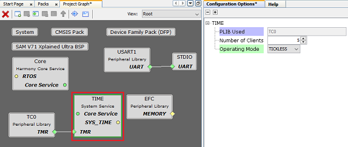
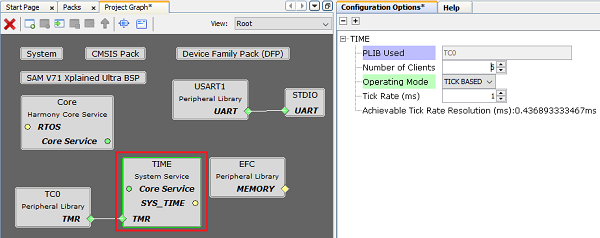
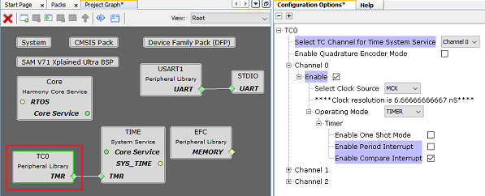
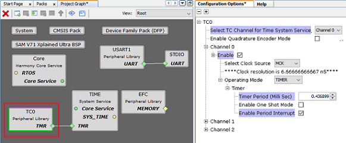

|
MPLAB Harmony Core Help
|
The Time System Service library should be configured through the MHC. The following figure shows the MHC configuration window for configuring the Time System Service and a brief description of various configuration options.
Depending on the timer PLIB connected to the Time System Service, the Time System Service provides options to setup the Time System Service in either Tick-less mode or Tick-based mode. The Time System Service shows both Tick-less and Tick-based options for the timers that support for both compare and period modes. The Time System Service shows only Tick-less mode for timers that only support compare mode. The Time System Service shows only Tick-based mode for timers that support only period mode.

Time System Service configured in Tick-less mode

Time System Service configured in Tick-based mode
The hardware Timer Peripheral library is automatically configured for the correct mode of operation when it is connected to the Time System Service as shown in the below example snapshots for TC instance 0.

Timer PLIB TC0 automatically configured by Time System Service which is configured for tick-less mode

Timer PLIB TC0 automatically configured by Time System Service which is configured for tick-based mode
|
MPLAB Harmony Core Help
|